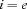
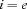
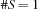
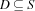

1.6 Connecting Finite Domain and Finite Set Constraints
The propagator in this section involves apart from finite domain constraints also finite set constraints. Its semantics is straightforward: it connects a domain variable  and a set variable
and a set variable  by projecting the changes of the constraints in both directions. Hereby, the finite domain variable designates an integer
by projecting the changes of the constraints in both directions. Hereby, the finite domain variable designates an integer  (as usual) and the set variable designates a singleton set
(as usual) and the set variable designates a singleton set  where .
where .
Propagation Rules
There are three propagation rules:



The last two rules propagate the changes of the upper bound of the set constraint to the domain constraint and the other way around.
1.6.1 The Class Definition
The class definition does not have any particularities. It follows the scheme known from previous sections.
class ConnectProp : public OZ_Propagator {
private:
static OZ_PropagatorProfile profile;
protected:
OZ_Term _fs;
OZ_Term _fd;
public:
ConnectProp(OZ_Term fsvar, OZ_Term fdvar)
: _fs(fsvar), _fd(fdvar) {}
virtual void gCollect(void) {
OZ_gCollectTerm(_fd);
OZ_gCollectTerm(_fs);
}
virtual void sClone(void) {
OZ_sCloneTerm(_fd);
OZ_sCloneTerm(_fs);
}
virtual size_t sizeOf(void) {
return sizeof(ConnectProp);
}
virtual OZ_Term getParameters(void) const {
return OZ_cons(_fs, (OZ_cons(_fd, OZ_nil())));
}
virtual OZ_PropagatorProfile *getProfile(void) const {
return &profile;
}
virtual OZ_Return propagate();
};
Note that set variables are handled the same way as domain variables.
1.6.2 The Propagation Function
The implementation of the propagation function starts with retrieving the constrained variables from the constraint store using the constructors of the classes OZ_FDIntVar and OZ_FSetVar. The class OZ_FSetVar provides for the same member functions as OZ_FDIntVar such that handling set variables does not differ from handling domain variables.
Propagation
The propagation starts with the first rule. it uses the member function OZ_FSetConstraint::putcard(int, to impose the cardinality constraint upon
int). The second rule implemented by removing all elements from that are definitely not in (see Section 1.8.3 of ``The Mozart Constraint Extensions Reference'' for details on OZ_FSetConstraint::getNotInSet()). The last propagation rule uses the operator OZ_FSetConstraint::operator <= for  . The constructor
. The constructor OZ_FSetConstraint is used to convert the OZ_Finite Domain appropriately. Note that imposing constraints on resp. are guarded by FailOnEmpty resp. FailOnInvalid to catch failures.
OZ_Return ConnectProp::propagate() {
printf("ConnectProp::propagate\n");
OZ_FDIntVar fd(_fd);
OZ_FSetVar fs(_fs);
// 1st propagation rule
fs->putCard(1, 1);
// 2nd propagation rule
FailOnEmpty(*fd -= fs->getNotInSet());
// 3rd propagation rule
FailOnInvalid(*fs <= OZ_FSetConstraint(*fd));
return (fd.leave() | fs.leave()) ? OZ_SLEEP : OZ_ENTAILED;
failure:
fd.fail(); fs.fail();
return OZ_FAILED;
}
The macro FailOnInvalid is define as
#define FailOnInvalid(X) if(!(X)) goto failure;
since finite set operator return OZ_FALSE in case an inconsistency occured.
The propagator closes with calling leave() for both variables and returning OZ_SLEEP resp. OZ_ENTAILED depending on whether not all variables denote values or they do.
1.6.3 The Header Function and Connecting to the Native Functor Interface
The header function uses OZ_Expect::expectFSetVar to check for a set variable.
OZ_BI_define(connect, 2, 0)
{
OZ_EXPECTED_TYPE(OZ_EM_FSET","OZ_EM_FD);
OZ_Expect pe;
OZ_EXPECT(pe, 0, expectFSetVar);
OZ_EXPECT(pe, 1, expectIntVar);
return pe.impose(new ConnectProp(OZ_in(0), OZ_in(1)));
}
OZ_BI_end
OZ_PropagatorProfile ConnectProp::profile;
The predefined macro OZ_EM_FSET is used to produce an appropriate error message in case an type exception has to be risen.
The C part of the native functor interface is given below.
OZ_C_proc_interface *oz_init_module(void)
{
static OZ_C_proc_interface i_table[] = {
{"connect", 2, 0, connect},
{0, 0, 0, 0}
};
return i_table;
}
1.6.4 Testing the Propagator
To make the propagator available on Oz side feed the following code:
declare
Connect = {{New Module.manager init}
link(url: 'sync.so{native}' $)}.connect
{Wait Connect}
{Show Connect}
The variable Connect refers to the propagator. By feeding the code below line by line one can observe (e. g. using the Browser ``The Oz Browser''), how the propagator works.
declare S = {FS.var.decl}
I = {FD.decl}
% S = I =
{Connect S I} % {{}..{0#134217726}}#1 {0#134217726}
{FS.exclude 2 S} % {{}..{0#1 3#134217726}}#1 {0#1 3#34217726}
I :: 1#100 % {{}..{1 3#100}}#1 {1 3#100}
{FS.exclude 1 S} % {{}..{3#100}}#1 {3#100}
I <: 4 % {3}#1 3
The comments at the end of each line indicate the constraints after feeding that line.